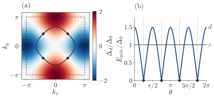
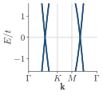

Advanced Quantum Materials 2027 · All lectures · Lecture notes
Session 5. Superconductivity, Nambu Representation and Majorana Physics
5.13 Nodal singlet order, d-wave pairing in the cuprates and the angular-momentum expansion
Can a singlet gap vanish on part of the Fermi surface, and how do we name the patterns of sign of \(\Delta(\mathbf k)\)? We arrive at the d-wave gap (5.13), whose nodes sit on the diagonals of the zone, and at the expansion (5.14), where we name an order by counting its lobes. On the triangular lattice the same counting gives an f-wave order, which is odd and so a spin triplet.
\[E(\mathbf k) = \pm\sqrt{\varepsilon(\mathbf k)^2 + |\Delta(\mathbf k)|^2}. \tag{5.9}\]
\[\textbf{Spin triplet (odd parity):} \quad \Delta(\mathbf k) = -\Delta(-\mathbf k), \qquad \Delta_{\sigma\sigma'} = +\Delta_{\sigma'\sigma}\ \text{(spin-symmetric)}. \tag{5.12}\]
The first equation is the spectrum of the BdG Hamiltonian of Section 5.8. At a point of the Fermi surface, where \(\varepsilon(\mathbf k)=0\), the smallest quasiparticle energy is \(|\Delta(\mathbf k)|\). The second is the triplet line of the classification of Section 5.11, and its other line says that a spin singlet is even in \(\mathbf k\).
Inside the spin-singlet, even-parity order there is a further useful distinction, since a singlet gap can be uniformly nonzero, as in the s-wave case of Section 5.9, or it can be nodal. The standard example of the second case is d-wave order on the square lattice.
The d-wave gap of the square lattice is
\[\Delta_{d}(\mathbf k) = \Delta_0\left(\cos k_x - \cos k_y\right). \tag{5.13}\]
It vanishes on the diagonals of the zone, \(k_x=\pm k_y\), so a superconductor with this gap is gapless where its Fermi surface crosses these diagonals.
The gap (5.13) vanishes along the diagonals of the Brillouin zone, \(k_x = \pm k_y\). Together with (5.9), this means that the quasiparticle spectrum \(E(\mathbf k) = \sqrt{\varepsilon(\mathbf k)^2 + \Delta_d(\mathbf k)^2}\) is gapless where the Fermi surface crosses these diagonals, which gives a nodal singlet superconductor. This is the pairing symmetry of the cuprate high-temperature superconductors. They have critical temperatures up to about 130 K at ambient pressure, above the boiling point of liquid nitrogen, and they are spin-singlet but clearly not s-wave.
The steps From pairing on the bonds to the d-wave gap (5.13)
Let us start with a chain, where an \(\uparrow\) electron on site \(n\) pairs with a \(\downarrow\) electron on the two neighboring sites \(n\pm1\), with the same amplitude \(\Delta_1\) on both bonds,
\[\Delta_1\sum_n\sum_{\delta=\pm1}c_{n\uparrow}^\dagger c_{n+\delta,\downarrow}^\dagger.\]
The amplitude is even in the bond \(\delta\), so the pair is a singlet. With \(c_n^\dagger=N^{-1/2}\sum_k e^{-ikn}c_k^\dagger\) the sum over \(n\) sets the second momentum to \(-k\), and each bond gives the phase \(e^{ik\delta}\). The two bonds together give \(e^{ik}+e^{-ik}=2\cos k\), so the term is
\[\sum_k 2\Delta_1\cos k\;c_{k\uparrow}^\dagger c_{-k\downarrow}^\dagger,\]
which is the onsite pairing of (5.4) written in momentum space, with the constant \(\Delta\) replaced by \(\Delta(k)=2\Delta_1\cos k\). This is the extended \(s\)-wave pairing of the chain. The sign of the transform does not enter, since both bonds are there.
On the square lattice the bonds point along \(\pm\hat x\) and \(\pm\hat y\), and the same steps give \(2\Delta_1\cos k_x\) from the bonds along \(x\) and \(2\Delta_1\cos k_y\) from the bonds along \(y\). With the same amplitude on the four bonds the result is \(2\Delta_1(\cos k_x+\cos k_y)\), which is the extended \(s\)-wave. With the amplitude \(+\Delta_1\) on the bonds along \(x\) and \(-\Delta_1\) on the bonds along \(y\) it is
\[\Delta(\mathbf k) = 2\Delta_1\left(\cos k_x-\cos k_y\right),\]
which is (5.13) with \(\Delta_0=2\Delta_1\). Only the relative sign of the two kinds of bonds enters. An overall sign of \(\Delta_1\) is a choice of gauge, as for any \(\Delta\), and it does not move the zeros, which are where \(\cos k_x=\cos k_y\), meaning \(k_x=\pm k_y\) inside the zone. In pyqula h.add_pairing(mode="dx2y2", delta=x) gives this \(\Delta(\mathbf k)\) with \(\Delta_1=x\), so \(\Delta_0=2x\).

g3_dwave_square.py
h.add_pairing(mode="dx2y2", delta=0.1), which is \(\Delta_0=0.2t\), with the momenta in units of the inverse lattice constant. (a) The map of \(\Delta_d(\mathbf k)/\Delta_0\) in reciprocal space, with the first Brillouin zone dashed and the Fermi surface as a black line. The sign changes on the diagonals of the zone, where the map is white, and the four dots are the nodes, where the Fermi surface crosses the diagonals. (b) The smallest quasiparticle energy (5.9) along each direction from \(\Gamma\), at the angle \(\theta\), in units of \(\Delta_0\). For \(s\)-wave pairing, h.add_swave(0.2), it is \(\Delta_0\) in every direction. For \(d\)-wave pairing it goes to zero at the four nodes, where it is below \(0.01\Delta_0\) on the mesh of the script, which is the nodal superconductor seen in the spectrum.Behind this there is a clear and general way to organize the possible cases, which is analogous to the expansion of an atomic orbital wave function in spherical harmonics. We expand the superconducting gap in an angular-momentum basis on the Fermi surface,
\[\Delta(\mathbf k) \;\sim\; \sum_L \Delta_L\, Y_L(\mathbf k), \tag{5.14}\]
\[\begin{aligned} L=0:\quad &\text{s-wave (conventional, typically phonon-driven)},\\ L=1:\quad &\text{p-wave (spin-triplet, often ferromagnetic-magnon-driven)},\\ L=2:\quad &\text{d-wave (spin-singlet, often antiferromagnetic-magnon-driven; cuprates)}. \end{aligned}\]
In real and reciprocal space, s-wave order is flat and constant, with no momentum dependence at all. The \(d_{x^2-y^2}\) order of (5.13) changes sign around the Fermi surface in a pattern of four lobes, \(+,-,+,-\), with the same name and the same lobe structure as an atomic \(d\) orbital. There is also a third possibility, which is called extended s-wave. It is still \(L=0\), meaning that it has the same overall symmetry as plain s-wave under the lattice point group. However, it is nodal along the radial direction, since it is positive near the zone center \(\Gamma\), goes through a node and is negative further out. Figure 5.3 shows these sign structures over the Brillouin zone, together with the p- and f-wave cases below.
The same classification into three cases, uniform s-wave, a nodal order and extended s-wave, can be repeated on the triangular lattice. There the nodal case has six lobes of alternating sign around the Fermi surface, and it is an f-wave order, \(L=3\). A pattern of six lobes with alternating sign is the signature of \(L=3\), and not of \(L=2\), which is the four-lobed \(d_{x^2-y^2}\) state of the square lattice. Note that this order is outside the singlet family of this section. Six lobes with alternating sign mean that the gap changes sign under a half turn, so \(\Delta(-\mathbf k) = -\Delta(\mathbf k)\). By (5.12) an \(L=3\) order has odd parity, so it is necessarily spin-triplet, and not singlet like the s-, extended-s- and d-wave cases above.

Notebook check-in: session5.ipynb, “Gapped and nodal superconducting orders” (Core)
Implement the \(d_{x^2-y^2}\) gap of (5.13) on the square lattice and plot \(\Delta(\mathbf k)\) over the Brillouin zone. Check the pattern of four lobes with alternating sign, and the position of its nodes relative to a given Fermi surface. The nodal \(L=3\) (f-wave) case of the triangular lattice discussed above is also in this section of the notebook, if you want to see the pattern of six lobes directly.
Rings of the cuprate YBa\(_2\)Cu\(_3\)O\(_{7-\delta}\) were made with 0, 2 and 3 grain-boundary Josephson junctions, and the magnetic flux through each ring was measured at \(4.2\) K with a scanning SQUID microscope. A spontaneous half flux quantum, \(\Phi_0/2=h/4e\), was observed in the ring with 3 junctions and not in the rings with 2 junctions, and the authors write that these results are consistent with d-wave pairing symmetry. The measurement is in this article. Our own reading is that a junction between two grains can join lobes of \(\Delta_d\) of opposite sign. An odd number of such sign changes around the ring adds a phase \(\pi\) to the winding of the phase of the condensate, so the flux quantization (5.1) becomes \(\Phi=(n+\tfrac12)\Phi_0\). This holds for a ring whose inductance times the critical current of its junctions is large compared with \(\Phi_0\).
On the triangular lattice a gap goes around the Fermi surface as
\[\Delta(\theta)\propto\cos3\theta,\]
with \(\theta\) the angle around \(\Gamma\). It has six lobes of alternating sign. What are its parity, its angular momentum and its spin?
Show the answers
- A. ✗ False
This is false. A \(d\)-wave gap such as \(\cos k_x-\cos k_y\) has four lobes. Six lobes of alternating sign cannot be even, because a half turn moves each lobe by three places and flips its sign.
- B. ✓ True
This is true. A half turn moves every lobe by three places, and the sign alternates, so \(\Delta(-\mathbf k)=-\Delta(\mathbf k)\). By (5.12) this is odd parity and a spin triplet, and six lobes mean \(L=3\).
\[\textbf{Spin triplet (odd parity):} \quad \Delta(\mathbf k) = -\Delta(-\mathbf k), \qquad \Delta_{\sigma\sigma'} = +\Delta_{\sigma'\sigma}\ \text{(spin-symmetric)}. \tag{5.12}\]
- C. ✗ False
This is false. A function \(\cos3\theta\) has \(L=3\) and six lobes. Under \(\theta\to\theta+\pi\) it becomes \(\cos(3\theta+3\pi)=-\cos3\theta\), so it is odd and an odd \(L\) cannot be a singlet.
Each plot shows the BdG bands of the triangular lattice along \(\Gamma\), \(K\), \(M\), \(\Gamma\). The Fermi level is at \(E=0\). Which one is a nodal superconductor?



Show the answers
- A. ✗ False
This is false. Here there is no pairing, so the bands are \(\varepsilon(\mathbf k)\) and \(-\varepsilon(\mathbf k)\), and they cross at \(E=0\) wherever the Fermi surface crosses the path, between \(\Gamma\) and \(K\) and between \(M\) and \(\Gamma\). This is the metal.
- B. ✗ False
This is false. This is \(s\)-wave pairing with
delta=0.4of pyqula. The smallest quasiparticle energy is \(|\Delta|=0.4t\) on the Fermi surface, so the spectrum has a gap everywhere. - C. ✓ True
This is true. This is the nodal \(f\)-wave pairing with
delta=0.2of pyqula. The smallest quasiparticle energy between \(\Gamma\) and \(K\) is \(0.91t\), but the pairing vanishes on the line from \(\Gamma\) to \(M\). The bands still cross at \(E=0\) two thirds of the way from \(\Gamma\) to \(M\), which is a node.
The extended \(s\)-wave gap is \(\Delta_{\text{ext}}(\mathbf k)=\Delta_0(\cos k_x+\cos k_y)\), and the Fermi surface of the square lattice is \(\varepsilon(\mathbf k)=-2t(\cos k_x+\cos k_y)-\mu=0\). Find \(\Delta_{\text{ext}}\) on the Fermi surface for \(\mu=-t\) and for \(\mu=0\).
Solution
On the Fermi surface \(\cos k_x+\cos k_y=-\mu/2t\), so the gap there is \(\Delta_{\text{ext}}=-\Delta_0\mu/2t\), the same at every point of the Fermi surface. For \(\mu=-t\) this is \(\Delta_0/2\) at every point, so the spectrum (5.9) has no node on this Fermi surface. For \(\mu=0\) it is zero at every point. The Fermi surface is then the square \(|k_x|+|k_y|=\pi\), where \(\cos k_x+\cos k_y=0\), which is the node ring of the gap.
So the same order is gapped on the whole Fermi surface at one filling and gapless on the whole Fermi surface at another. Only the position of the node ring relative to the Fermi surface decides it, as the caption of Figure 5.3 says. Both ARPES and STM see this difference, while the symmetry of the order is the same. ARPES measures the gap at each point of the Fermi surface. STM measures the density of states, which has a full gap at \(\mu=-t\) and states down to zero energy at \(\mu=0\).
Try it. In the cell, compare the bands along the path G, K, M, G for the two orders. The \(s\)-wave bands keep a smallest quasiparticle energy \(|\Delta|=0.4\) at the Fermi surface. The nodal \(f\)-wave bands touch zero energy, even though \(\Delta=0.2\) is nonzero.
- In Section 5.14 two superconductors with the same gap on the Fermi surface are told apart by the winding of the phase of \(\Delta(\mathbf k)\), and not by its nodes.
- In Section 7.4 the doped two-dimensional Hubbard model, which is related to the unconventional superconductivity of the cuprates, is one of the hard problems where matrix product states give the most accurate results.
- In Session 9 impurities are used to read what kind of superconductor we have, with the magnetic impurity of Section 9.7.